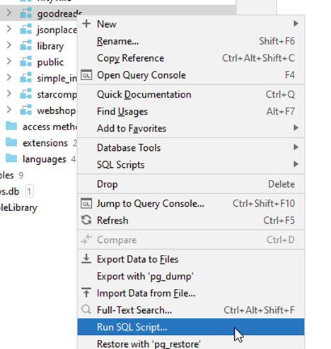
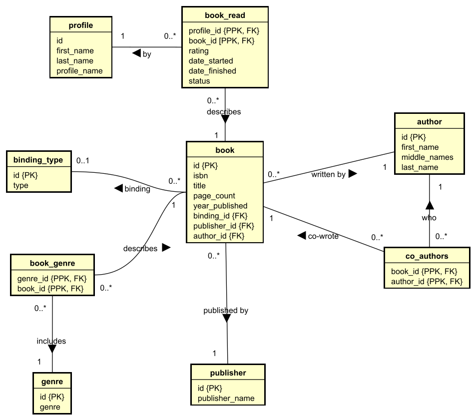
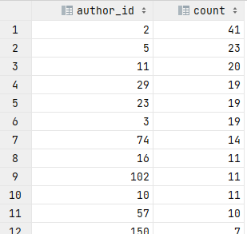
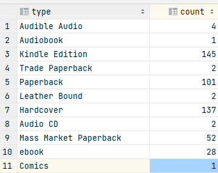
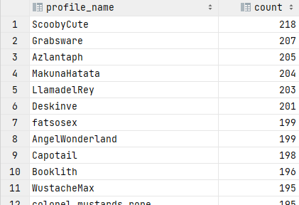

In these exercises we will use the data set "Goodreads V2".
You must first import this data set. Download the ddl file from here:
You must import this by running the ddl code, like this:

Right click on your schema folder, and select the "Run SQL Script...".
This should import a new schema, the "goodreads_v2".
Then, you must import data. Download the data her:
And then run it, in the same way as before. You should now have a "goodreads_v2" schema with data. Verify this.
The below is a Global Relations Diagram to get an overview of the database:

You may want to right click the above, and open the image in a new tab, if it is too small.
Over the following slides, you will be asked questions, which must be answered by querying the dvdrental database.
All questions can be answered with a single sql statement (consider this a challange), but sometimes it is easier to do multiple statements.
For most questions, you can also find the answer as a hint. Do give it a serious try first, before you look at the answer.
What is the first and last name of the author with id 23
23,Jim,Butcher
SELECT id, first_name, last_name
FROM author
WHERE id=23;
What book has the id 24358527?
Angles of Attack (Frontlines, #3)
SELECT title
FROM book
WHERE id = 24358527;
How many profiles are there?
793
SELECT COUNT(*)
FROM profile;
How many profiles have the first name 'Jaxx'?
3
SELECT COUNT(*)
FROM profile
WHERE first_name='Jaxx';
Are there two authors with the same first name?
John,8
Stephen,6
Michael,6
Douglas,5
Peter,5
Richard,5
Robert,5
James,4
David,4
Brian,4
SELECT first_name, COUNT(first_name) count
FROM author
GROUP BY first_name
ORDER BY count DESC;
Create a list of book titles and their page count, order by the book with the highest page count first.
N/A
SELECT title, page_count
FROM book
ORDER BY page_count DESC;
The previous exercise would show 15 books without a page count first. We don't care about those now.
Create a list of book titles and their page count, order by the book with the highest page count first, but remove books without a page count.
N/A
SELECT title, page_count
FROM book
WHERE page_count IS NOT NULL
ORDER BY page_count DESC;
Show the books published in 2017.
N/A
SELECT *
FROM book
WHERE year_published = 2017;
Who published 'Tricked (The Iron Druid Chronicles, #4)'
Random House Publishing Group,169
SELECT publisher_name, id
FROM publisher
WHERE id = (SELECT publisher_id
FROM book
WHERE title = 'Tricked (The Iron Druid Chronicles, #4)');
What's the binding type of 'Fly by Night'?
Hardcover
SELECT type
FROM binding_type
WHERE id = (SELECT binding_id
FROM book
WHERE title = 'Fly by Night');
How many books do not have an ISBN number?
200
SELECT COUNT(*)
FROM book
WHERE isbn IS NULL;
How many authors have a middle name?
47
SELECT COUNT(*)
FROM author
WHERE middle_name IS NOT NULL;
Show an overview of author id and how many books they have written. Order by highest count at the top.

and more..
SELECT author_id, COUNT(*) as count
FROM book
GROUP BY author_id
ORDER BY count DESC;
What is the highest page count?
1248
SELECT MAX(page_count)
FROM book;
What is the title of the book with the highest page count?
Oathbringer (The Stormlight Archive, #3)
SELECT title
FROM book
WHERE page_count = (
SELECT MAX(page_count)
FROM book);
How many books has the reader with the profile name 'Venom_Fate' read?
179
SELECT COUNT(*)
FROM book_read
WHERE status = 'read'
AND profile_id = (
SELECT id
FROM profile
WHERE profile_name = 'Venom_Fate'
);
How many books are written by Brandon Sanderson?
41
SELECT COUNT(*)
FROM book
WHERE author_id =
(SELECT id
FROM author
WHERE first_name = 'Brandon'
AND last_name = 'Sanderson');
);
How many readers have read the book 'Gullstruck Island'?
189
SELECT COUNT(*)
FROM book_read
WHERE status = 'read'
AND book_id = (
SELECT id
FROM book
WHERE title = 'Gullstruck Island'
);
How many books have the author Ray Porter co-authored?
3
SELECT COUNT(*)
FROM co_authors
WHERE author_id =
(SELECT id
FROM author
WHERE first_name = 'Ray'
AND last_name = 'Porter');
Who are the names of the author of the book which contains 'The Summer Dragon' in its title?
Todd,Lockwood,"The Summer Dragon (The Evertide, #1)"
SELECT first_name, last_name, title
FROM book, author
WHERE book.author_id = author.id
AND title LIKE '%The Summer Dragon%';
What type of binding does
Dead Iron (Age of Steam, #1)
have?
Paperback
SELECT type
from binding_type,
book
WHERE book.binding_id = binding_type.id
AND book.title = 'Dead Iron (Age of Steam, #1)';
Show a list of each binding type and how many books are using that type.

SELECT type, COUNT(*)
FROM binding_type bt, book b
WHERE bt.id=b.binding_id
GROUP BY type;
For each profile, show how many books they have read.

SELECT profile_name, COUNT(*) count
FROM profile, book_read
WHERE book_read.status='read'
AND profile.id=book_read.profile_id
GROUP BY profile_name
ORDER BY count DESC;
Show all the genres of the book 'Hand of Mars (Starship's Mage, #2)'.
science-fiction
fantasy
space
space-opera
magic
war
military-fiction
military-science-fiction
fiction
science-fiction-fantasy
adventure
SELECT genre
FROM genre g, book_genre bg, book b
WHERE g.id = bg.genre_id AND bg.book_id=b.id
AND b.title='Hand of Mars (Starship''s Mage, #2)';
Show a list of both author and co-authors for the book with title 'Dark One'.
| first_name | last_name |
|---|---|
| Brandon | Sanderson |
| Collin | Kelly |
| Jackson | Lanzing |
| Kurt | Russell |
| Nathan | Gooden |
(SELECT first_name, last_name
FROM author,
book
WHERE author.id = book.author_id
AND book.title = 'Dark One')
UNION
(SELECT first_name, last_name
FROM author,
book,
co_authors
WHERE book.id = co_authors.book_id
AND author.id = co_authors.author_id
AND book.title = 'Dark One');
What is the title of the book which is read by most readers.
Title: Deception Point
Id: 976
Numbers of read: 253
SELECT title, book_id, COUNT(*) as count
FROM book_read, book
WHERE book_read.book_id=book.id
AND book_read.status='read'
GROUP BY title, book_id
ORDER BY count DESC
LIMIT 1;
For the top-ten largest books (page count wise) show their title and binding type.
| title | page count | binding |
|---|---|---|
| "Oathbringer (The Stormlight Archive, #3)" | 1248 | Hardcover |
| "Rhythm of War (The Stormlight Archive, #4)" | 1230 | Hardcover |
| The Stand | 1152 | Hardcover |
| "A Dance with Dragons (A Song of Ice and Fire, #5)" | 1125 | Kindle Edition |
| "Words of Radiance (The Stormlight Archive, #2)" | 1087 | Hardcover |
| "The Way of Kings (The Stormlight Archive, #1)" | 1007 | Hardcover |
| "The Wise Man's Fear (The Kingkiller Chronicle, #2)" | 994 | Hardcover |
| "A Clash of Kings (A Song of Ice and Fire, #2)" | 969 | Paperback |
| "The Damned Trilogy: A Call to Arms, The False Mirror, and The Spoils of War" | 958 | Kindle Edition |
| Swan Song | 956 | Mass Market Paperback |
SELECT title, page_count, type
FROM book,
binding_type
WHERE book.binding_id = binding_type.id
AND page_count IS NOT NULL
ORDER BY page_count DESC
LIMIT 10;
Show a count of how many books there are in each genre
fiction,448
fantasy,411
audiobook,298
science-fiction-fantasy,262
science-fiction,228
magic,227
adventure,216
adult,173
high-fantasy,147
epic-fantasy,139
urban-fantasy,124
young-adult,114
mystery,107
paranormal,102
...
SELECT genre, COUNT(title) count
FROM genre, book, book_genre
WHERE genre.id = book_genre.genre_id AND book_genre.book_id=book.id
GROUP BY genre
ORDER BY count DESC;
Show a list of publisher names and how many books they each have published
Orbit,29
Tor Books,29
Del Rey,22
Faolan's Pen Publishing Inc.,21
Roc,20
Gollancz,13
47North,13
Broad Reach Publishing,7
HarperCollinsChildren'sBooks,6
...
SELECT publisher.publisher_name, COUNT(*) as count
FROM publisher, book
WHERE publisher.id=book.publisher_id
GROUP BY publisher.publisher_name
ORDER BY count DESC;
Which book has the highest average rating?
Homo Deus: A History of Tomorrow,3.2524271844660194
SELECT b.title, AVG(br.rating) as rating
FROM book_read br,
book b
WHERE br.book_id = b.id
GROUP BY b.title
ORDER BY rating
DESC LIMIT 1;
How many books have reader 'radiophobia' read in 2018?
You can extract a year from a DATE with EXTRACT(YEAR FROM book_read.date_finished).
radiophobia, 23
SELECT p.profile_name, COUNT(*)
FROM book_read br,
profile p
WHERE br.profile_id = p.id
AND EXTRACT(YEAR FROM br.date_finished) = 2018
AND br.status='read'
AND p.profile_name = 'radiophobia'
GROUP BY p.profile_name;
Show a list of how many books reader 'radiophobia' have read each year.
radiophobia, 2016, 13
radiophobia, 2017, 19
radiophobia, 2018, 23
radiophobia, 2019, 25
radiophobia, 2020, 21
radiophobia, 2021, 29
radiophobia, 2022, 1
SELECT p.profile_name, EXTRACT(YEAR FROM br.date_finished) as year, COUNT(*) as count
FROM book_read br,
profile p
WHERE br.profile_id = p.id
AND p.profile_name = 'radiophobia'
AND br.date_finished IS NOT NULL
GROUP BY p.profile_name, year
ORDER BY year;
Show a top 10 of highest rated books.
You can use LIMIT x to take only the x first rows of a result.
Homo Deus: A History of Tomorrow, 3.2524271844660194
"Traitor's Blade (Greatcoats, #1)", 3.2355769230769231
Perfect State, 3.2114285714285714
"Scourged (The Iron Druid Chronicles, #9)", 3.2053571428571429
"Foundryside (The Founders Trilogy, #1)", 3.2041884816753927
"Shadow and Bone (The Shadow and Bone Trilogy, #1)", 3.1941747572815534
In the Shadow of Lightning (Glass Immortals #1), 3.1933701657458564
Artemis, 3.1930693069306931
"The Last War (The Last War, #1)", 3.191588785046729
"Summer Knight (The Dresden Files, #4)", 3.1897435897435897
SELECT book.title, AVG(rating) as rating
FROM book_read,
book
WHERE book_read.book_id = book.id
GROUP BY book_id, book.title
ORDER BY rating DESC
LIMIT 10;
What's the poorest rated book?
"Storm Front (The Dresden Files, #1)",2.7272727272727273
SELECT b.title, AVG(br.rating) as rating
FROM book b,
book_read br
WHERE b.id = br.book_id
GROUP BY b.title
ORDER BY rating ASC
LIMIT 1;
Is there any book, which hasn't been read?
Books with the following IDs has not been read:
29384742
12111823
18243345
21032488
15998999
15999003
10626950
8074907
13485378
So, yes.
SELECT id
FROM book
WHERE id NOT IN
(SELECT book_id
FROM book_read
WHERE status='read');
Which reader has read the most books
SCoobyCute, 218
SELECT p.profile_name, COUNT(*) count
FROM book_read br,
profile p
WHERE br.profile_id = p.id
AND br.status = 'read'
GROUP BY p.profile_name
ORDER BY count DESC
LIMIT 1;
Show how many pages each reader has read. Limit to top 10.
| profile name | page count |
|---|---|
| ScoobyCute | 86554 |
| Grabsware | 84153 |
| Azlantaph | 84052 |
| LlamadelRey | 82854 |
| TrueTips | 81849 |
| MakunaHatata | 81549 |
| notmuchtoit | 81332 |
| DosentAnyoneCare | 81312 |
| Deskinve | 80705 |
| Booklith | 80493 |
SELECT p.profile_name, SUM(b.page_count) total
FROM book_read br,
book b,
profile p
WHERE br.book_id = b.id
AND br.profile_id = p.id
AND br.status = 'read'
GROUP BY p.profile_name
ORDER BY total DESC
LIMIT 10;
What's the lowest number of days to read 'Oathbringer (The Stormlight Archive, #3)', and who did that?
Subtracting one DATE from another will give the difference in days.
tachophobia,4 angelic,4 MinyKissez,4 Pleauxin,4
SELECT p.profile_name, MIN(date_finished - date_started) as quickest
FROM book_read br,
profile p
WHERE br.profile_id = p.id
AND br.status = 'read'
AND br.book_id = (
SELECT id
FROM book
WHERE title = 'Oathbringer (The Stormlight Archive, #3)'
)
GROUP BY p.profile_name
ORDER BY quickest ASC;